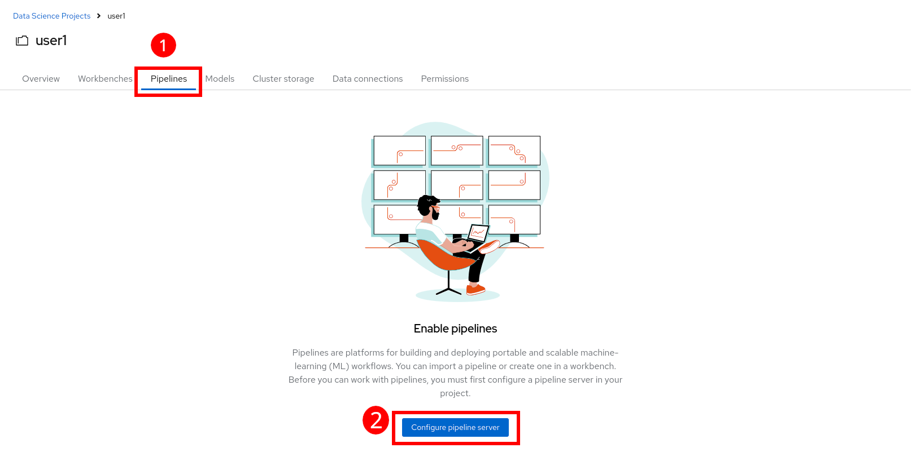

Connecting to your project and pipeline server
As a preliminary step, each of you is going to
-
Connect to a Data Science project
- this will help keep your things together
-
Create a Data Connection
- we need that for the pipeline server to store its artifacts
-
Deploy a Data Science Pipeline Server
- we will need one, and it’s better to create it from the start
-
Launch a Workbench
- we will use it to review content and notebooks
-
Clone the git repo into your Workbench
- this contains all the code from the prototype
The instructions below will guide you through these steps. Follow them carefully.
Connect a project
- First, in the OpenShift AI Dashboard application, navigate to the Data Science Projects menu on the left:

- A project with the same name as your user id has been created for you. You have been assigned a unique user ID at the begining of the lab. Remember this user ID for the instances creation.
Click on the available project project. You should land on a similar page:

Create a Data Connection for the pipeline server
-
We have deployed an instance of Minio in the cluster to act as a simple Object Storage for our purposes.
-
You will need to Add data connection that points to it. Scroll down to the bottom of data science project page and click on “Data Connections”:

-
You will land to and empty state page. Click on “Add data connection”. Here are the information you need to enter:
- Name:
pipelines - Access Key - REPLACE WITH YOUR USER ID:
userX - Secret Key:
minio123 - Endpoint:
https://minio-s3-minio.apps.riviera-dev-2024.sandbox2830.opentlc.com - Region:
none - Bucket - REPLACE WITH YOUR USER ID:
userX
IMPORTANT: Once again, the bucket you will use has to match with the user ID you were provided
- The result should look like:

Create a Pipeline Server
It is highly recommended to create your pipeline server before creating a workbench. So let’s do that now!
- On the top menu click on “Pipelines”. Then click on “Configure pipeline server”

-
Select the Data Connection created earlier (pipelines) and click the Configure pipeline server button:

-
Wait for the pipeline server to finish its creation. When your pipeline server is ready, your screen will look like the following:

At this point, your pipeline server is ready and deployed.
IMPORTANT: You need to wait until that screen is ready. If it’s still spinning, wait for it to complete. If you continue and create your workbench before the pipeline server is ready, your workbench will not be able to submit pipelines to it.